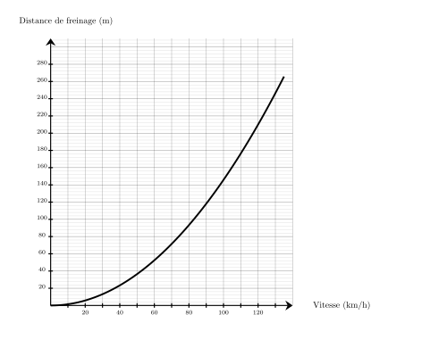
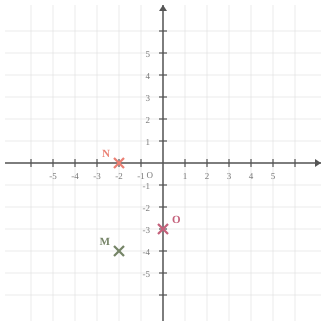

Teresa doit acheter du gazon. Sur la notice, il est indiqué de prévoir $10$ kg pour $50\text{ m}^2$. Combien doit-elle en acheter pour une surface de $250\text{ m}^2$ ?
Commençons par trouver combien de kg il faut prévoir pour $1\text{ m}^2$.
$1\text{ m}^2$, c'est ${\color{#216D9A}\boldsymbol{50}}$ fois moins que 50$\text{ m}^2$. $10$ kg $\div {\color{#216D9A}\boldsymbol{50}} = 0{,}2$ kg on a donc besoin de ${\color{#216D9A}\boldsymbol{0{,}2}}$ kg pour recouvrir $1\text{ m}^2$. Cherchons maintenant la quantité de kg nécessaire pour recouvrir $250\text{ m}^2$. $250\text{ m}^2$, c'est ${\color{#216D9A}\boldsymbol{250}}$ fois plus que $1\text{ m}^2$. ${\color{#216D9A}\boldsymbol{0{,}2}}$ kg $\times {\color{#216D9A}\boldsymbol{250}} = 50$ kg Teresa aura besoin de ${\color{#F15929}\boldsymbol{50}}$ kg pour recouvrir $250\text{ m}^2$.
Exercice 3
Donner le nom du solide suivant :
Prisme droit avec une base ayant $5$ sommets.
Exercice 4
Déterminer la valeur exacte de $NO$.
On utilise le théorème de Pythagore dans le triangle $MNO$, rectangle en $N$.
On obtient :
$\begin{aligned}
MN^2+NO^2&=MO^2\\
NO^2&=MO^2-MN^2\\
NO^2&=7^2-5^2\\
NO^2&=49-25\\
NO^2&=24\\
NO&={\color{#F15929}\boldsymbol{\sqrt{24}}}
\end{aligned}$
En simplifiant, on obtient : $NO = {\color{#F15929}\boldsymbol{2\sqrt{6}}}$.
Mentalement :
La longueur $NO$ est donnée par la racine carrée de la différence des carrés de $7$ et de $5$.
Cette différence vaut $49-25=24$.
La valeur cherchée est donc : $\sqrt{24}=2\sqrt{6}$.
Séance 35
Exercice 1
Quel est le carré de $9$ ?
Le carré d'un nombre est ce nombre multiplié par lui-même : $9\times9=81$
Exercice 2
Une voiture roule à la vitesse de $90\text{ km/h}$ sur une route mouillée.
En utilisant le graphique ci-dessous, quelle est la distance de freinage en mètres ?

Pour une vitesse de $90\text{ km/h}$, la distance de freinage est d'environ ${\color{#F15929}\boldsymbol{118}}\text{ m}$.
Sur la figure suivante :
$\leadsto X$ est sur $[WU]$,
$\leadsto Y$ est sur $[WV]$, $\leadsto$ les droites $(UV)$ et $(XY)$ sont parallèles. Écrire la double égalité de Thalès.
Dans le triangle $UVW$ :
$\leadsto$ $X\in[WU]$,
$\leadsto$ $Y\in[WV]$,
$\leadsto$ $(UV)//(XY)$,
donc d'après le théorème de Thalès, les triangles $UVW$ et $XYW$ ont des longueurs proportionnelles.
$\dfrac{WX}{WU}=\dfrac{WY}{WV}=\dfrac{XY}{UV}$ Remarque On pourrait aussi écrire : $\dfrac{WU}{WX}=\dfrac{WV}{WY}=\dfrac{UV}{XY}$
Déterminer les coordonnées respectives des points $O$, $N$ et $M$

Les coordonnées respectives des points sont : $O({\color{#F15929}\boldsymbol{0}};{\color{#F15929}\boldsymbol{-3}})$, $N({\color{#F15929}\boldsymbol{-2}};{\color{#F15929}\boldsymbol{0}})$ et $M({\color{#F15929}\boldsymbol{-1{,}5}};{\color{#F15929}\boldsymbol{-4}})$
Exercice 4
Compléter à l'aide des longueurs $HG$, $HE$ et $GE$ :
$$
\cos\left(\widehat{HGE}\right)=\dfrac{\ldots}{\ldots}
$$
$HGE$ est rectangle en $H$ donc :
$$
\cos\left(\widehat{HGE}\right)
= {\color{#F15929}\mathbf{\dfrac{HG}{GE}}}.
$$